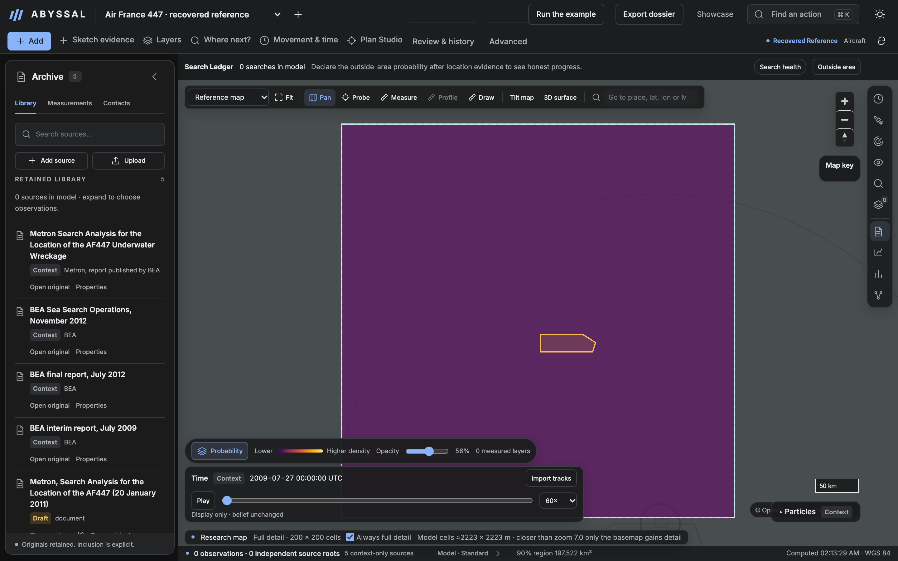
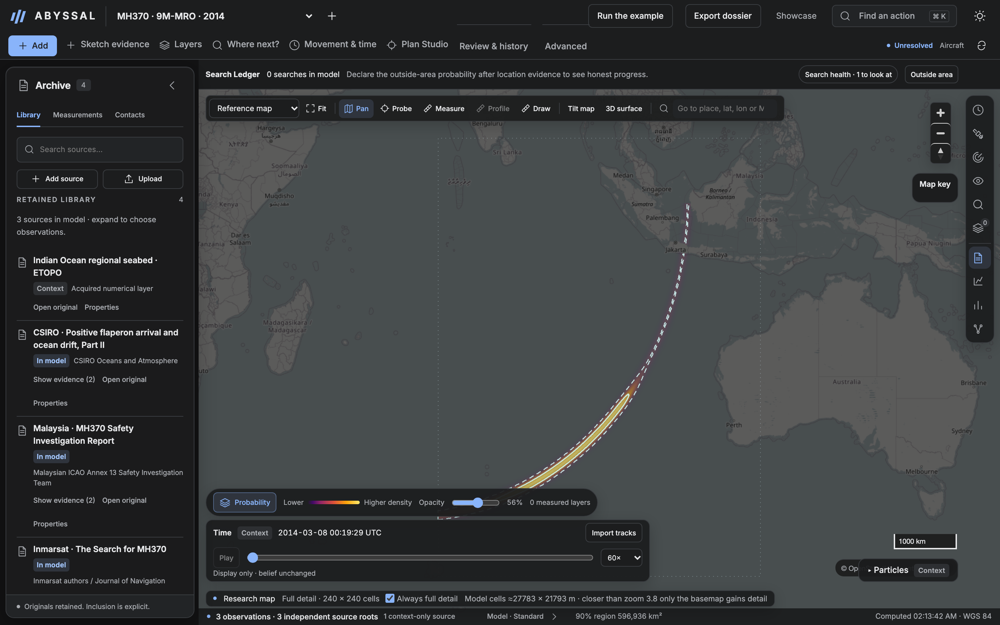

The Discipline of Refusal
Air France 447, MH370 lineage collapse, hindsight-bias traps, and why the strongest test of a probabilistic system is where it refuses to publish an answer.
Anyone can build software that draws a confident red blob on an ocean map. The true test of a mathematical workbench—and of the engineer who built it—is what happens when the data is messy, the sampler fails to converge, or a retrospective validation looks slightly too flattering.
Throughout ABYSSAL's development, two real-world aviation tragedies—Air France Flight 447 (lost over the mid-Atlantic in June 2009, recovered in April 2011) and Malaysia Airlines Flight 370 (lost in March 2014)—served as reference benchmarks. Neither case is treated as an operational claim; both became crucibles for a single principle: a model that cannot tell you when to distrust it is worse than no model at all.
1. The AF447 chronological held-out backtest—and how not to misread it
Because the wreck of Air France 447 was eventually found at \(3^\circ 03'57''\text{ N},\; 30^\circ 33'42''\text{ W}\), it offers a tempting opportunity to test whether ABYSSAL's chronological negative-search engine scores well on a real historical timeline. Yet retrospective backtests are notorious breeding grounds for quiet self-deception.
To keep the experiment clean, ABYSSAL enforces strict held-out isolation: the answer-key coordinate is never passed into prior construction, POD selection, or inference, and is read only after all four chronological phase posteriors are frozen. Crucially, Phase 2 uses Metron's pre-discovery 2011 detection assumption (\(\text{POD} = 0.83\)) rather than Stone's 2014 retrospective revision (\(\text{POD} = 0.90\)), because smuggling post-discovery parameter updates back into a historical replay leaks the answer.
| Chronological Phase | As-of | Log score (bits) | Gain vs. uniform | Rank percentile | Ordered area |
|---|---|---|---|---|---|
| Phase 0 · Naive uniform prior (strawman) | 2009-06-01 | −12.644 | +0.000 | 35.8% | 126,896 km² |
| Phase 1 · LKP + 40 NM reachability | 2009-06-05 | −8.180 | +4.464 | 99.9% (#10/6400) | 309 km² |
| Phase 2 · After Pourquoi Pas? sonar | 2009-08-18 | −8.099 | +4.545 | 99.9% (#10/6400) | 309 km² |
| Phase 3 · REMUS / ORION approx (caveated) | 2010-05-24 | −7.905 | +4.738 | 99.9% (#8/6400) | 247 km² |
A marketing deck would stop right there and trumpet "Rank #8 out of 6,400 cells! 99.9th percentile!" ABYSSAL's own backtest report immediately tears that headline apart with six explicit hindsight-bias warnings:
- Do not cite "rank 10 of 6,400" as a prediction: Phase 1 is a Gaussian centred on the last known position, and the actual wreck lay only ~10 km (\(0.27\sigma\)) from that point. A 99.9th-percentile rank follows mechanically from placing a circle around the last known position—the uniform prior is a strawman.
- The honest incremental gain is small: Compared fairly against Phase 1, the negative-search accounting added +0.08 bits in Phase 2 and +0.28 bits in Phase 3.
- No pinned search polygon covered the wreck cell: Because the historical polygons in the dataset missed the wreck cell, the backtest only tests mass shifting elsewhere—it cannot prove how gracefully a search directly over the wreck would have been handled.
- Domain-bounds selection bias: Choosing a \(4^\circ \times 4^\circ\) box around the last known position already excludes the rest of the Atlantic; widening the box would artificially inflate the gain over uniform.
- Heterogeneous terrain shadows: Published Phase 3 footprints omit georeferenced \(0.90 / 0.50 / 0.10\) POD sub-zones in rugged bathymetry, so Phase 3 is labelled strictly as a caveated sensitivity check.
- One case is never coverage calibration (\(n = 1\)): A single discovery can score log-loss on one realisation, but it cannot validate whether 90% credible regions contain the truth 90% of the time. Proper calibration requires multi-case held-out benchmarks (planted-target trials or historical AIS-gap reappearances).
For the exact same reason, admitting AF447's historical searches into a live operational prior was a recorded NO-GO inside ABYSSAL's Calibration Gate: the reviewed public documents lacked measured spatial POD and held-out detector calibration.


2. The MH370 refusal: when high ESS hides lineage collapse
One of the most instructive moments in building ABYSSAL came from its experimental MH370 flight-path Sequential Monte Carlo (SMC) laboratory. Seven Inmarsat Burst Timing Offset (BTO) satellite pings constrain an aircraft's distance from a geostationary satellite at seven timestamps, defining a sequence of concentric rings across the Indian Ocean and Asian continent.
When we weighted thousands of simulated flight trajectories against those seven sequential rings, a subtle pathology emerged. Standard diagnostics—specifically the nominal Effective Sample Size (ESS) after resampling—looked deceptively healthy. Yet when we traced each final particle backwards through its ancestral tree, almost the entire cloud had collapsed onto a handful of original root lineages.
The empirical consequence was unmistakable: across random seeds at 1,000 particles, the posterior weight assigned to the southern corridor swung wildly between 0.000 and 1.000. Even at 200,000 particles, independent seeds still disagreed noticeably (0.678 vs. 0.629). Rather than smoothing over the instability or hiding the seed variance behind a pretty heatmap, ABYSSAL refused to wire the SMC lab into the live belief map—locking it permanently as a read-only Context prototype that publishes no search prior.
Interactive: How resampling hides lineage collapse behind a healthy ESS
Drag the Random Seed slider from #1 to #12 at 7 pings. Even though nominal ESS resets to 100% after every resampling step, the ancestral tree collapses onto 1–3 surviving lineages—causing the South-route estimate to swing wildly from seed to seed. That is why ABYSSAL refuses to publish non-convergent SMC outputs as priors.
3. Adversarial self-audits and the Ten Invariants
Mathematical bugs in probabilistic software are uniquely dangerous because they rarely crash the program—they simply output a plausible-looking wrong number. During an external adversarial audit in November 2026, a subtle bug was caught where Model v5 silently applied legacy v1 peak normalisation to non-quick positive observations after a quick search was added; two days later, a second audit caught a terrain-context omission in v5 walking priors. Both were fixed immediately with permanent regression tests and documented openly in the engine's audit trail.
To prevent drift as features multiply, the entire workbench is governed by ten non-negotiable architectural invariants—rules enforced by more than 2,500 automated tests:
SCENARIO end-to-end and never enters a real case.4. Where ABYSSAL stands—and where it goes next
Across these six essays, we have walked from a lost set of keys in a kitchen to log-space Bayesian grids, provenance-root pooling, sub-cell correlated misses, minimum-KL assertions, water-filling economics, a 17-tool live Ops Console, a dark-fleet Watchlist, and strict historical backtesting.
The hardest milestone still lies ahead: external empirical calibration. Automated tests can prove that the arithmetic is exact, that duplicates cannot inflate confidence, and that the interface never hides an assumption. Only real practitioners—marine surveyors, search coordinators, insurers, and compliance analysts—comparing predicted detection probabilities against real-world outcomes can replace "analyst assumption" with a measured reliability diagram.
Until that calibration scoreboard is earned in the field, ABYSSAL will keep doing what an honest mathematical instrument should do: show its work, count every source once, price every hour of uncertainty transparently, and refuse to pretend it knows more than the evidence allows.